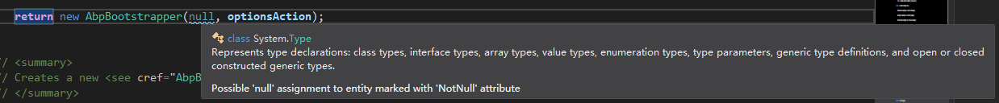
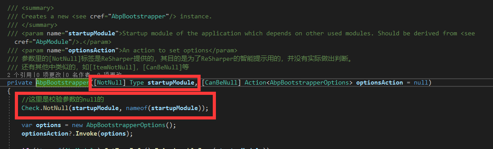

1. NotNull,CanBeNull,ItemNotNull等
这些其实是ReSharper插件提供的，在JetBrains.Annotations命名空间下，它是ReSharper自己智能提示用的，例如：在参数上加上[NotNull]标签之后，在传入的参数为null时，ReSharper的智能提示会给出警告信息。但是这个提醒并不会影响编译。这个提示可以让开发人员在使用参数时，注意检查参数的可空问题。


可以在ReSharper官网查看更多类似的Attribute
2. DebuggerStepThrough
这个在ABP的源码中只有一次使用，不算是高频，不过在调试时注意到这个了，算是个小技巧吧。可以在调试的时候跳过打上了这个标签的相关代码。具体说明见官方文档
指示调试器逐句通过代码，而不是进入并单步执行代码。 此类不能被继承。
3. DependsOnAttribute
设置当前模块的依赖模块。这些模块在ModuleManager里会依次加载。然后根据依赖的顺序，依次执行每个模块的PreInitialize,Initialize,PostInitialize事件，完成模块的初始化工作。
1
2
3
4
5
6
7
| [DependsOn(
typeof(AbpAspNetCoreModule),
typeof(AbpAspNetCoreDemoCoreModule),
typeof(AbpEntityFrameworkCoreModule),
typeof(AbpCastleLog4NetModule),
typeof(AbpAspNetCoreODataModule)
)]
|
4. RemoteServiceAttribute
这个也正好是 【ABP框架笔记】2.ApplicationServices 生成web api的一个补充。
具体的使用也写了一个单独的例子
启动过程：
1
2
3
4
5
6
7
8
9
10
11
12
13
14
15
16
17
18
19
20
21
22
23
24
25
26
27
28
29
30
31
32
33
34
35
36
37
38
39
40
41
42
43
44
45
46
47
48
49
50
51
52
53
54
55
56
57
58
59
60
61
62
| //1. Abp.Modules.AbpModuleManager
public virtual void StartModules()
{
var sortedModules = _modules.GetSortedModuleListByDependency();
sortedModules.ForEach(module => module.Instance.PreInitialize());
sortedModules.ForEach(module => module.Instance.Initialize());
sortedModules.ForEach(module => module.Instance.PostInitialize());
}
//2. Abp.AspNetCore.AbpAspNetCoreModule
/// <summary>
/// 这个方法就是将服务类转成控制器的
/// </summary>
private void AddApplicationParts()
{
var configuration = IocManager.Resolve<AbpAspNetCoreConfiguration>();
var partManager = IocManager.Resolve<ApplicationPartManager>();//微软的库，动态的添加视图和控制器
...
//这里就是将服务类转换为控制器的过程
var controllerAssemblies = configuration.ControllerAssemblySettings.Select(s => s.Assembly).Distinct();
foreach (var controllerAssembly in controllerAssemblies)
{
partManager.AddApplicationPartsIfNotAddedBefore(controllerAssembly);
}
...
}
//3. Abp.AspNetCore.Mvc.Conventions.AbpAppServiceConvention 核心类
/// <summary>
/// 核心实现
/// </summary>
/// <param name="application"></param>
public void Apply(ApplicationModel application)
{
foreach (var controller in application.Controllers)
{
var tempName = controller.ControllerName;
var type = controller.ControllerType.AsType();
var configuration = GetControllerSettingOrNull(type);
//判断当前控制器是否由服务直接生成，是的话移除后缀。并生成相应的路径配置
if (typeof(IApplicationService).GetTypeInfo().IsAssignableFrom(type))
{
//移除类名的后缀："AppService", "ApplicationService"
controller.ControllerName = controller.ControllerName.RemovePostFix(ApplicationService.CommonPostfixes);
Debug.WriteLine($"controller.ControllerName={controller.ControllerName},configuration.ModuleName:{configuration?.ModuleName}");
configuration?.ControllerModelConfigurer(controller);
//把service生成的api模块配置成area，本身的控制器视图页已经有了area的路由配置，无需处理
ConfigureArea(controller, configuration);
//配置web api，这个方法内部也使用到了RemoteServiceAttribute
ConfigureRemoteService(controller, configuration);
}
else
{
//如果是由控制器类实例得来的，判断是否有RemoteService标签。如果有，也要生成相应的 路径。
var remoteServiceAtt = ReflectionHelper.GetSingleAttributeOrDefault<RemoteServiceAttribute>(type.GetTypeInfo());
if (remoteServiceAtt != null && remoteServiceAtt.IsEnabledFor(type))
{
ConfigureRemoteService(controller, configuration);
}
}
}
}
|